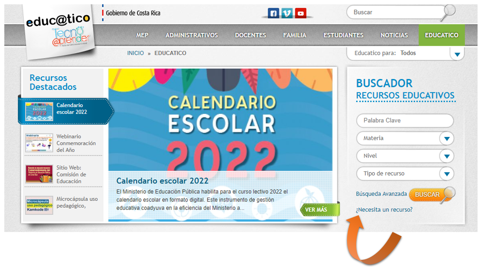

Introducción
El departamento de Gestión y Producción de la Dirección de Recursos Tecnológicos del MEP, desea poner a la disposición de los asesores nacionales de materia, los resultados de análisis de la encuesta que se brinda en el portal de Educ@tico, cuando no se encuentra un recurso en especifico.
Esta encuesta es el resultado de 8 preguntas que tienen como fin recoger información acerca de posibles recursos que los usuarios no encuentran en el portal educativo.
Esta encuesta tiene el fin de poder bridar al usuario la posibilidad de poder ser tomado en consideración con su solicitud para futuras producciones de recursos; Además busca indicar tanto a los asesores de materia como al departamento GESPRO, cuales pueden ser las prioridades en desarrollo, según los resultados.
Al ingresar al portal de Educ@tico se puede realizar búsquedas de recursos o en caso de que no encuentre ningún recurso se puede acceder a ésta encuesta:

El enlace de acceso es:
https://www.mep.go.cr/educatico